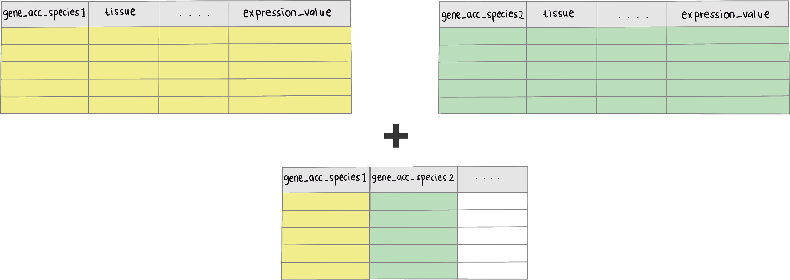

Data requirements
Input data frame required for greatR to register your gene expression profiles is a data frame that contains gene expression time-course data with all replicates. The illustrated diagram below shows the required input_df data frame format of greatR. This data frame must contain:
two different species which users wish to compare (for each gene, at least two replicates are required in all species), and
-
six data columns:
-
locus_name: accession or unique ID of each gene. -
accession: accession or name of the species to compare. -
timepoint: time point of the gene expression data. -
expression_value: desired RNA-seq expression value or measure of the abundance of gene or transcripts which one wishes to compare. This value can be RPM, RPKM, FPKM, TPM, TMM, DESeq, SCnorm, GeTMM, ComBat-Seq and raw reads counts. -
tissue: tissue from which RNA-seq data were extracted. -
group: replicate ID for each expression value.
-

Using a helper function to prepare input data
greatR package provides a helper function get_expression_of_interest() to combine reference and query (data to register) data frames, if table ID which connect reference and query data frames provided (as illustrated in the figure below).

This package also provides data frames as examples to use this function. Those data frames are expression data of B. rapa (Calderwood et al., 2021), Arabidopsis (Klepikova et al., 2015), and join table or table ID which contains both accession of B. rapa and Arabidopsis. This table ID is important to combine both B. rapa and Arabidopsis data frames.
Load and view example data
To load example data frames provided within the package, users need to run the following procedure:
# Load example data
id_table_rapa_subset <- system.file(
"extdata/sample_data/id_table_5genes.rds",
package = "greatR") %>%
readRDS()
klepikova_subset <- system.file(
"extdata/sample_data/arabidopsis_expression_5genes.rds",
package = "greatR") %>%
readRDS()
rapa_subset <- system.file(
"extdata/sample_data/brassica_rapa_expression_5genes.rds",
package = "greatR") %>%
readRDS()Let’s take a look on each data frame we have loaded below:
| CDS.model | sample_id | FPKM | accession | tissue | timepoint | dataset | est_counts | group | norm.cpm |
|---|---|---|---|---|---|---|---|---|---|
| BRAA02G018970.3C | ERR_ro18_rna_seq_v3_R18A1_1 | 0.287365 | Ro18 | apex | 11 | ro18_rna_seq | 12 | Ro18-apex-11 | 0.3968734 |
| BRAA02G018970.3C | ERR_ro18_rna_seq_v3_R18A1_2 | 1.069565 | Ro18 | apex | 11 | ro18_rna_seq | 47 | Ro18-apex-11 | 1.4147711 |
| BRAA02G018970.3C | ERR_ro18_rna_seq_v3_R18A1_3 | 0.541893 | Ro18 | apex | 11 | ro18_rna_seq | 23 | Ro18-apex-11 | 0.7423984 |
| CDS.model | sample_id | FPKM | accession | tissue | timepoint | dataset | est_counts | group | norm.cpm |
|---|---|---|---|---|---|---|---|---|---|
| AT1G69120 | ERR_ds_klepikova_SRR1659921 | 0.299101 | Col0 | apex | 7 | ds_klepikova_1 | 4 | Col0-apex-07 | 0.4667855 |
| AT1G69120 | ERR_ds_klepikova_SRR1659922 | 0.020064 | Col0 | apex | 7 | ds_klepikova_2 | 1 | Col0-apex-07 | 0.0741901 |
| AT1G69120 | ERR_ds_klepikova_SRR1660397 | 0.000000 | Col0 | apex | 8 | ds_klepikova_1 | 0 | Col0-apex-08 | 0.0000000 |
As we can see, both data frames of expression profiles above contain a column of gene accession (CDS.model). These two columns from each data frame were mapped into a table ID as we can see below: CDS.model for B. rapa gene accessions and locus_name for Arabidopsis gene accessions.
# View table ID
id_table_rapa_subset %>%
dplyr::select(CDS.model, locus_name, symbol, gene_id) %>%
utils::head(3) %>%
knitr::kable()| CDS.model | locus_name | symbol | gene_id |
|---|---|---|---|
| BRAA01G016140.3C | AT4G24540 | AGL24 | AT4G24540 |
| BRAA02G018970.3C | AT1G69120 | AP1 | AT1G69120 |
| BRAA02G043220.3C | AT5G61850 | LFY | AT5G61850 |
Having all of these informations, we can then easily get the required input data.
Combine data
Users can use function get_expression_of_interest() to combine two different table data frames containing expression values that users wish to compare.
all_data <- get_expression_of_interest(
data_ref = rapa_subset,
data_to_transform = klepikova_subset,
id_table = id_table_rapa_subset,
lookup_col_ref_and_id_table = "CDS.model",
lookup_col_ref_and_to_transform = "locus_name",
colnames_wanted = NULL,
tissue_wanted = "apex",
gene_of_interest_acc = c("AT1G69120", "AT5G618"),
sum_exp_data_ref = FALSE,
accession_data_to_transform = "Col0"
)Let’s take a look on how the combined data:
| locus_name | CDS.model | sample_id | FPKM | accession | tissue | timepoint | dataset | est_counts | group | norm.cpm | id_transform_data |
|---|---|---|---|---|---|---|---|---|---|---|---|
| BRAA02G018970.3C | BRAA02G018970.3C | ERR_ds_klepikova_SRR1659921 | 0.299101 | Col0 | apex | 7 | ds_klepikova_1 | 4 | Col0-apex-07 | 0.4667855 | AT1G69120 |
| BRAA02G018970.3C | BRAA02G018970.3C | ERR_ds_klepikova_SRR1659922 | 0.020064 | Col0 | apex | 7 | ds_klepikova_2 | 1 | Col0-apex-07 | 0.0741901 | AT1G69120 |
| BRAA02G018970.3C | BRAA02G018970.3C | ERR_ds_klepikova_SRR1660397 | 0.000000 | Col0 | apex | 8 | ds_klepikova_1 | 0 | Col0-apex-08 | 0.0000000 | AT1G69120 |
| BRAA02G018970.3C | BRAA02G018970.3C | ERR_ro18_rna_seq_v3_R18A1_1 | 0.287365 | Ro18 | apex | 11 | ro18_rna_seq | 12 | Ro18-apex-11 | 0.3968734 | AT1G69120 |
| BRAA02G018970.3C | BRAA02G018970.3C | ERR_ro18_rna_seq_v3_R18A1_2 | 1.069565 | Ro18 | apex | 11 | ro18_rna_seq | 47 | Ro18-apex-11 | 1.4147711 | AT1G69120 |
| BRAA02G018970.3C | BRAA02G018970.3C | ERR_ro18_rna_seq_v3_R18A1_3 | 0.541893 | Ro18 | apex | 11 | ro18_rna_seq | 23 | Ro18-apex-11 | 0.7423984 | AT1G69120 |
After combining reference data and data to transform, users need to adjust it to the required input data, this can be done as follows.
all_data_final <- all_data %>%
dplyr::select(
locus_name,
accession,
timepoint,
expression_value = norm.cpm,
tissue,
group
)
all_data_final %>%
dplyr::group_by(accession) %>%
dplyr::slice(1:6) %>%
knitr::kable()| locus_name | accession | timepoint | expression_value | tissue | group |
|---|---|---|---|---|---|
| BRAA02G018970.3C | Col0 | 7 | 0.4667855 | apex | Col0-apex-07 |
| BRAA02G018970.3C | Col0 | 7 | 0.0741901 | apex | Col0-apex-07 |
| BRAA02G018970.3C | Col0 | 8 | 0.0000000 | apex | Col0-apex-08 |
| BRAA02G018970.3C | Col0 | 8 | 0.0000000 | apex | Col0-apex-08 |
| BRAA02G018970.3C | Col0 | 9 | 0.3722542 | apex | Col0-apex-09 |
| BRAA02G018970.3C | Col0 | 9 | 0.0000000 | apex | Col0-apex-09 |
| BRAA02G018970.3C | Ro18 | 11 | 0.3968734 | apex | Ro18-apex-11 |
| BRAA02G018970.3C | Ro18 | 11 | 1.4147711 | apex | Ro18-apex-11 |
| BRAA02G018970.3C | Ro18 | 11 | 0.7423984 | apex | Ro18-apex-11 |
| BRAA02G018970.3C | Ro18 | 29 | 11.3007002 | apex | Ro18-apex-29 |
| BRAA02G018970.3C | Ro18 | 29 | 23.2055664 | apex | Ro18-apex-29 |
| BRAA02G018970.3C | Ro18 | 29 | 22.0307747 | apex | Ro18-apex-29 |